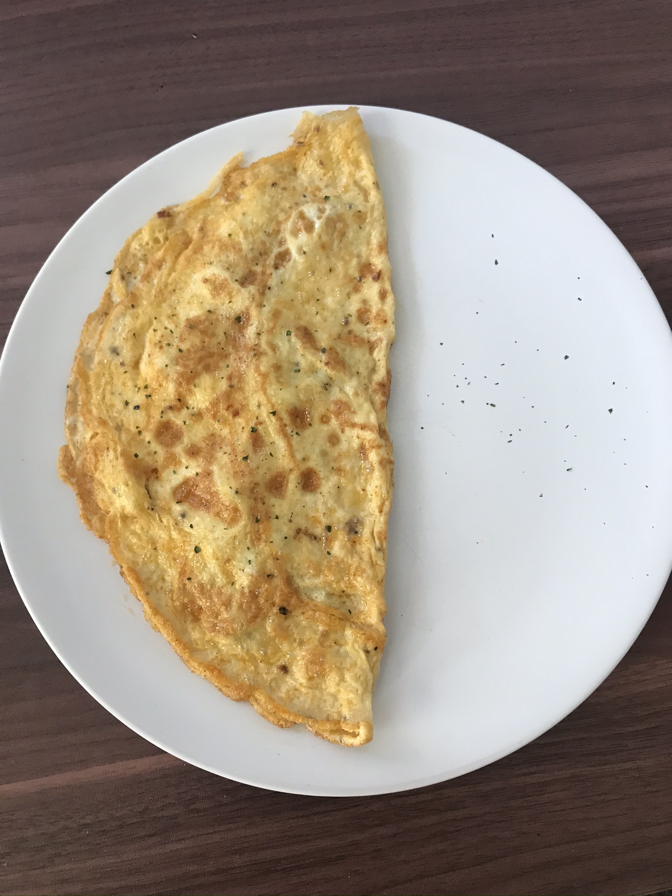
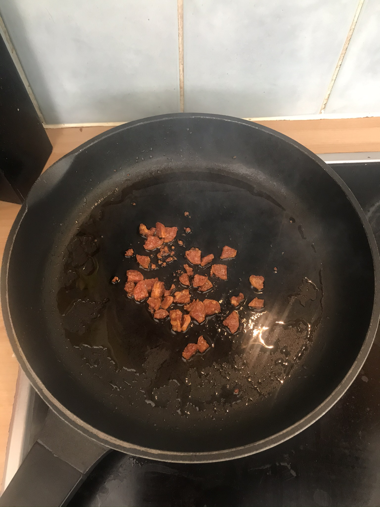
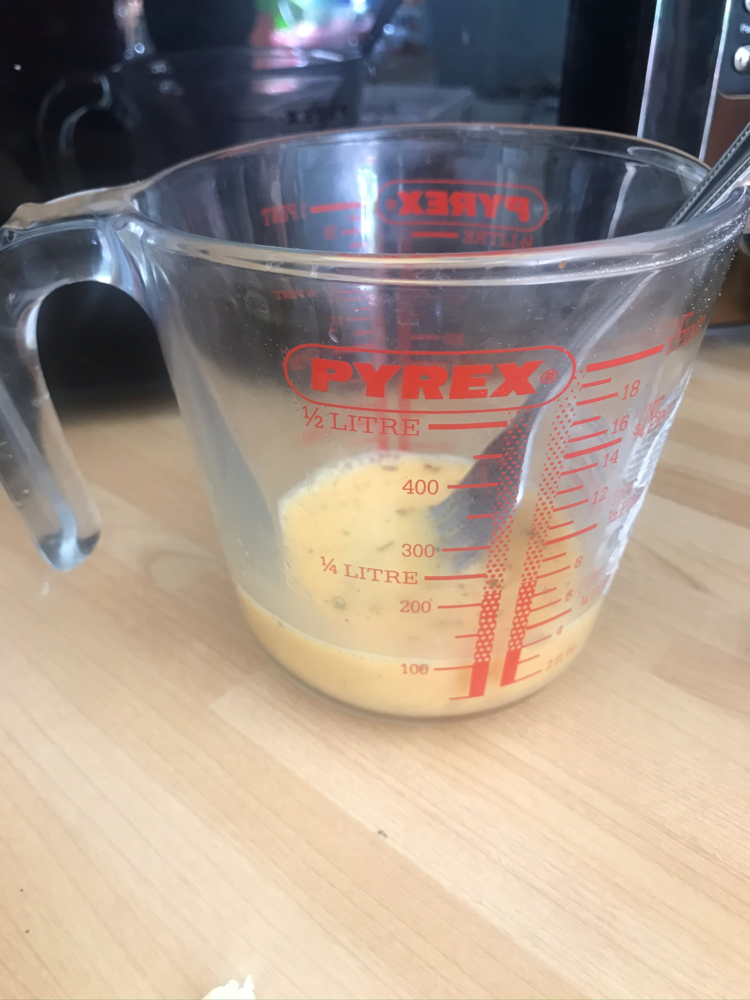
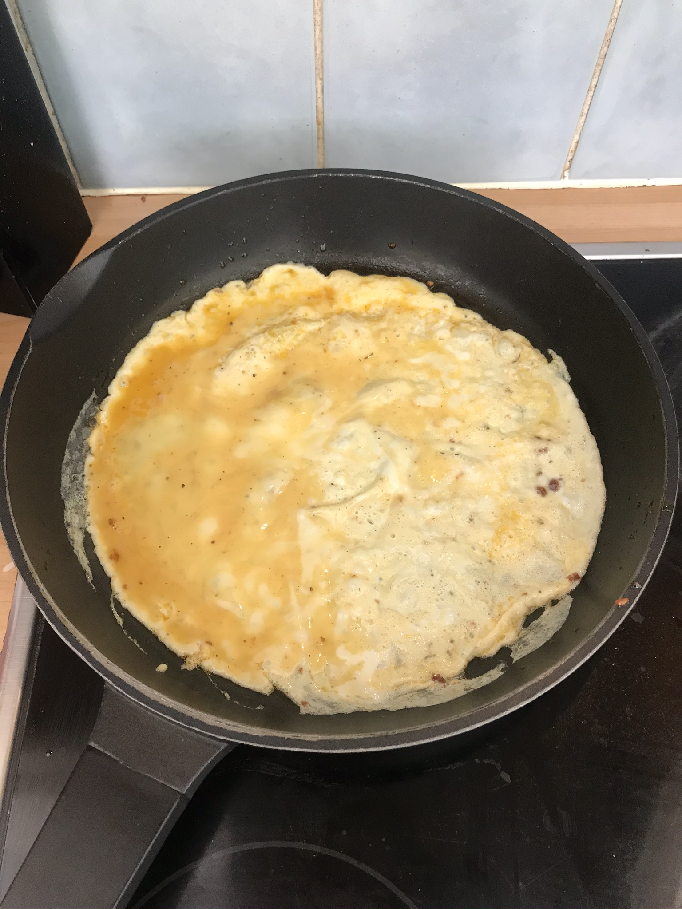
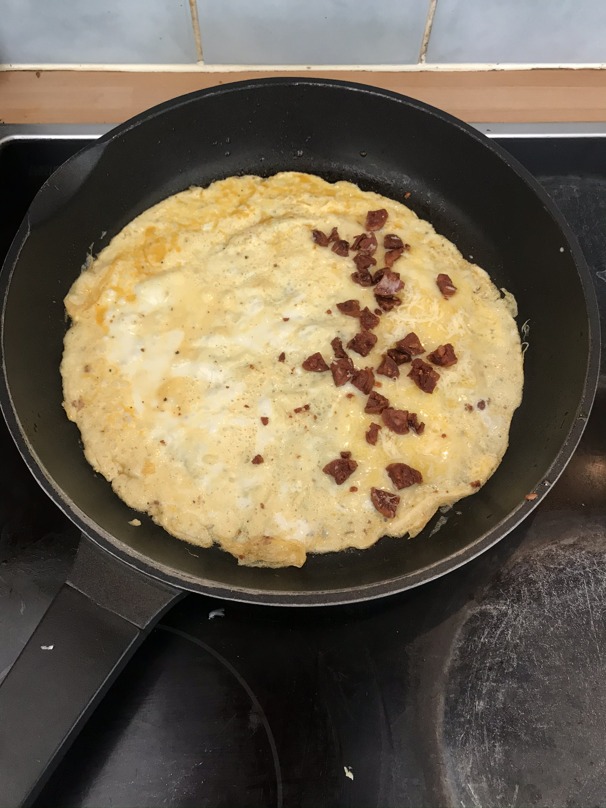
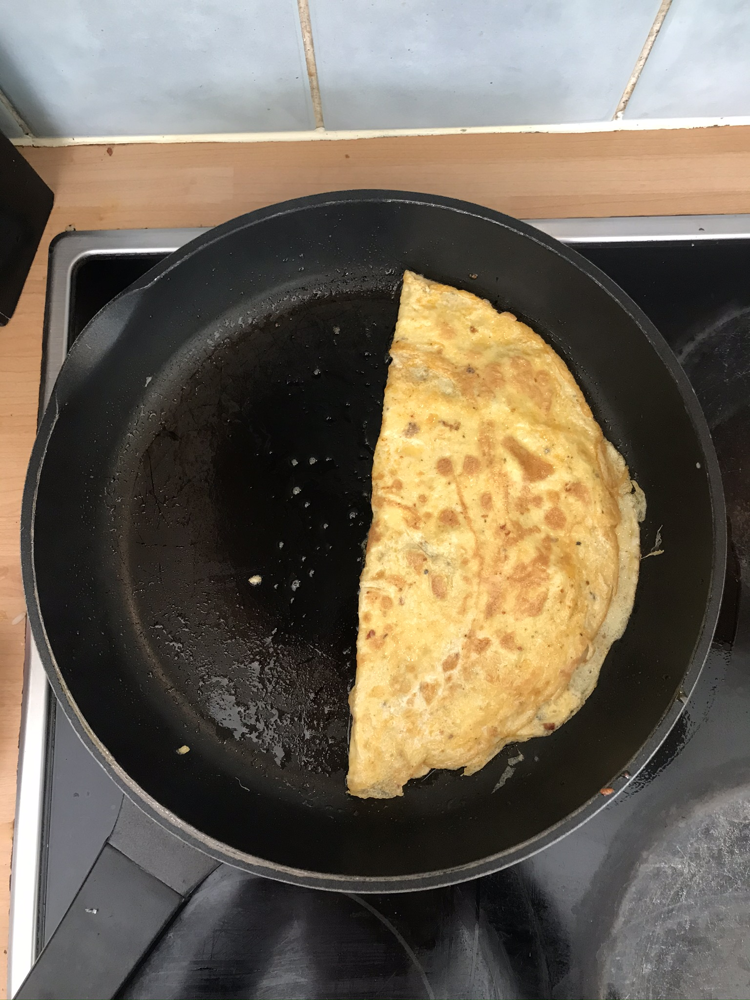

Chorizo Omelette
By Ben Knight
Ingredients
- 3 eggs
- 2 inches chorizo sausage
- 1 handfull of Cheddar cheese
- 1 tsp olive oil
- A pinch paparika
- Salt & pepper to taste
Recipe
Step 1:
Chop chorizo into small chunks and fry, on a high heat, with a small amount of oil. Fry until starting to brown.
Step 2:
Crack 3 eggs into a jug. Add paprika, salt, and pepper and mix fork.
Step 3:
Take the chorizo out of the frying pan and pour the egg mixure in to cook with the chorizo oils.
Step 4:
Add the fried chorizo and grated cheese to half of the omelette.
Step 5:
Quickly flip the omelette half over itself, ontop of the ingredients with a spatular.
